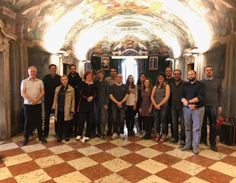

News
-
July 2018 - Cansu's recent results are now published in the proceedings of ALIFE 2018 in Tokyo.
[LINK] Mechanisms of Switching Response to External Phosphate Levels in Escherichia coli.
C. Uluseker, M. M. Hanczyc and O. Kahramanoğulları Artificial Life Conference Proceedings, 23-27 July, 2018, Tokyo.
[ Keywords: Systems Biology, Synthetic Biology, Artificial Life, Modelling, E. coli ] -
October 2017 - We have built microbial fuel cells and droplet cells at the IT University of Copenhagen,
Autumn School on DIY Liquid Handling Robots, Microbial Fuel Cells, and Artificial Chemical Life.
-
September 2017 - We had a workshop on modelling in Trento for H2020 LIAR - Living Architecture project.
